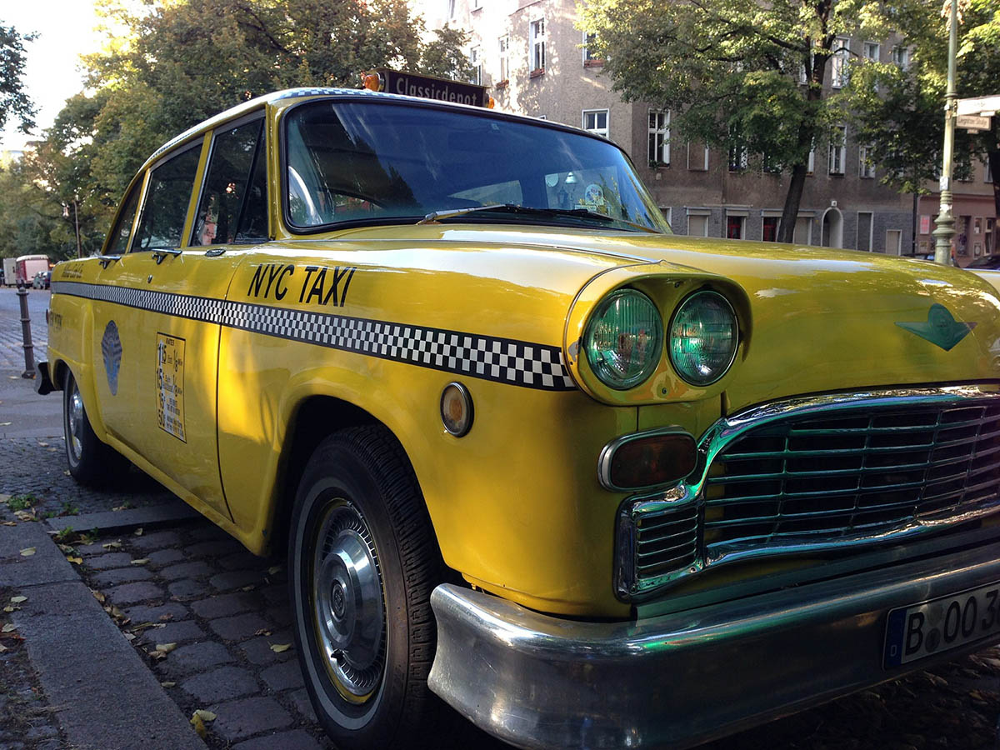

New York City seems crazy to get around, but there are loads of options to get from A to B. We won’t be providing transportation directly, but between taxis/lyft, public transit, etc. you can get around with ease. If you have any specific questions, don’t hesitate to ask us!
Your best bet is Google Maps, which will show you up-to-the minute public transit, biking, driving, and walking directions.
The MTA Subway and bus systems are a great way to get around NYC quickly and easily while avoiding traffic. Google Maps will give you the best route w/ live schedules for the next train or bus.
You can purchase MetroCards at kiosks inside subways stations via credit card or cash. There are options for just adding a balance to a card or unlimited ride options. See MetroCard Fares & Pricing for full details.
The venue is in South Brooklyn off the F/G and D/N/R/W trains. We live in North Brooklyn (Greenpoint) off the G and 7 trains.
Yellow and Green cabs can be hailed on the street anywhere in NYC. Green cabs indicate that the cab services boroughs outside of Manhattan, but you can hail yellow or green cabs anywhere in the 5 boroughs.
Lyft and other car services operate in NYC.

There are Citi Bike stations all over Manhattan and Brooklyn. Day passes are $12 and 3-day passes are $24. You can rent a bike using your credit or debit card at any Citi Bike Station. You check out a bike for 30 minutes and return it to any other station. A $4 fee is charged for every 15 minutes past the initial 30.
NYC is easily traversed on foot. Weather permitting, your destination may be easily accessed via your own two feet.
NYC is serviced by three airports:
- LaGuardia Airport (LGA)
-
Located in Queens, accessible by taxi and subway + bus. The best way to get to and from this airport is by taxi. If you choose to stay in Brooklyn, a taxi is very reasonable, at about $30. If you take the subway + bus option, the 7, E, and N trains will connect you to various bus routes that take you to the airport. The trip will take between an hour and 2 hours, depending on traffic and route.
- JFK International Airport (JFK)
-
Located in Queens, accessible by taxi and subway. Taxi and subway are both good options for commuting to and from this airport. It is located farther out in Queens than LaGuardia, so a taxi to Brooklyn or Manhattan will run you between $50 and $70. Depending on traffic, the trip will take between 30 minutes to an hour. If taking the subway, the A and J train will take you to the Airtrain that goes to each terminal. The trip will take between an hour and an hour and a half.
- Newark Liberty International Airport (EWR)
-
Located in Newark, New Jersey, accessible by taxi, train, and bus. A taxi will cost between $50 and $100, depending on traffic. It will take between 30 minutes to over an hour, depending on traffic. New Jersey Transit trains run out of Penn Station/Madison Square Gardens (34th Street in Manhattan) and connect to the Airtrain, taking about 25 minutes and costing about $15. Amtrak Trains to Newark run out of Penn Station/Madison Square Gardens (34th Street in Manhattan) connecting to the Airtrain and taking about 25 minutes. Tickets cost about $30. Buses to Newark Airport leave from Manhattan running along 41st street at Grand Central, Bryant Park, and Port Authority. The cost is about $15 and the trip will take between 30 minutes to an hour, depending on traffic.
- Advice on Taxis to and from the airports
-
While it is easy to use Uber or Lyft to get to the airports, I recommend that upon arrival to the airport, you follow signs to the taxi queue, and wait in line until directed by staff into the yellow or NJ cabs that are funneled through by the airport.